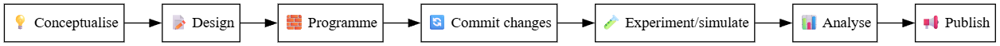
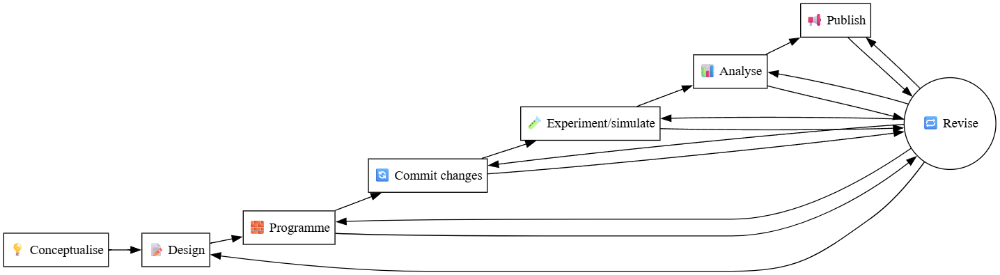
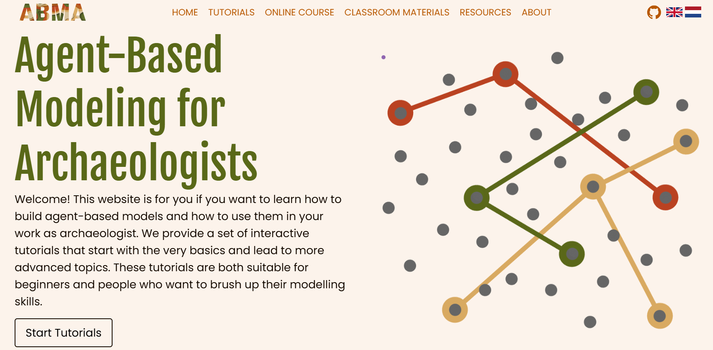

## 8. A simulation modeller as a software developer ### a workflow --- ## 8.1 The "big picture" ### Why? * **Reproducible:** anyone (including your future self) can run it and obtain the same results. * **Transparent:** the model’s assumptions, mechanisms, and implementation are easy to inspect. * **Collaborative:** colleagues can contribute, review, or reuse your code and data. * **Extensible:** improvements, corrections, or new experiments can be added without breaking the project. * **Reusable:** others can build on your work. --- ## 8.1 The "big picture" ### Modeller as a software developer 1. **Conceptual model** 2. **Implementation or "implemented model"** ("coding sessions"). 3. **Version control** ("git commits"). 4. **Experimentation** ("simulations") 5. **Analysis** 6. **Publication** --- ## 8.1 The "big picture" ### Modeller as a software developer  --- ## 8.1 The "big picture" ### Modeller as a software developer  --- ## 8.1 The "big picture" ### Example of a workflow in time ``` 💡📝 First conceptual model with enough definitions (variables, parameters, agents, functions) ↓ 🧱 First programming session creating a few model elements (not runnable) ↓ 🔄 Commit changes: "add netlogo file" ↓ 🔁📝 Rethinking a few definitions ↓ 🧱 Second programming session updating the model with new definitions (not runnable) ↓ 🔄 Commit changes: "update netlogo file" ↓ 🧱 Third programming session creating a minimal set of procedures for initialisation (runnable) ↓ 🔄 Commit changes: "update netlogo file" ↓ ... ↓ 🧪📊 Run a few simulations and observe the model dynamics (also output variables) ↓ 🔁🧱 Refine a model procedure, not reasonably behaving as intended ↓ ... ↓ ... ``` --- ## 8.2 Tools and services checklist ### Version control - Git - GitHub (or GitLab) - GitHub Desktop --- ## 8.2 Tools and services checklist ### Implementation-Simulation - NetLogo --- ## 8.2 Tools and services checklist ### Analysis - R - RStudio --- ## 8.2 Tools and services checklist ### Other - Markdown - BibTeX, Zotero - Quarto, GitHub Actions - IDEs (e.g. Visual Studio Code) - Zenodo --- ## 8.2 Tools and services checklist ### By the next session, you will have: * [ ] Created a **GitHub account**. * [ ] Created a simple repository for your model(s). * [ ] Set up a structured folder for your project and write a minimal README file. * [ ] Added these to your GitHub repository. * [ ] Created a **Zenodo account**. * [ ] Linked GitHub to Zenodo for future publication. --- ## 8.2 Tools and services checklist ### When using your own computer to work in a local repository: * [ ] Installed **Git** (and **GitHub Desktop**) on your computer. * [ ] Installed **NetLogo**, and **R** (and **RStudio**). * [ ] Configured Git (username, email, SSH key or HTTPS). This is necessary when using version control locally in your computer. ### Also recommended: * [ ] Installed **VS Code** or equivalent (for editing text and code files). * [ ] Install **Zotero** or equivalent and create a user account. --- ## 9. Git and GitHub --- ## 9.1 Version control and Git ### What is version control? - A system that records changes to a file or set of files over time so that you can recall specific versions later. - Compare, revert, recover - Collaborative (who, what, when, why) - Centralised vs. distributed (e.g. **Git**) <a title="Jason Long, CC BY 3.0 <https://creativecommons.org/licenses/by/3.0>, via Wikimedia Commons" href="https://commons.wikimedia.org/wiki/File:Git_icon.svg"><img width="64" alt="Git icon" src="https://upload.wikimedia.org/wikipedia/commons/thumb/3/3f/Git_icon.svg/64px-Git_icon.svg.png?20220905010122"></a> --- ## 9.2 Git terminology ### Repository - A collection of files and folders associated with a project. - Contains the entire history of the project. - Can be local to a folder on your computer, or remote (e.g. on GitHub). ### Initialise - Create a new, empty repository. - Can be done locally or remotely. - Local repositories can be pushed to a remote repository. - Remote repositories can be cloned to a local repository. - Local repositories can be synced with a remote repository. --- ## 9.2 Git terminology ### Add/Stage - Add changes to the staging area. - The staging area is a temporary area where changes are stored before they are committed to the repository. - Changes can be added to the staging area one at a time, or all at once. - Changes can be removed from the staging area before they are committed. ### Commit - A snapshot of the files in a repository at a particular point in time. - A commit has a unique ID, a timestamp, and a message describing the changes made in that commit. - Commits are made to a repository and can be viewed, compared, and reverted. --- ## 9.2 Git terminology ### Push - Send changes from a local repository to a remote repository. - Changes are sent as commits. - Changes can be pushed to a remote repository from a local repository. - Changes can be pushed to a remote repository from a remote repository. ### Pull - Get changes from a remote repository to a local repository. - Changes are received as commits. - Changes can be pulled from a remote repository to a local repository. - Changes can be pulled from a remote repository to a remote repository. --- ## 9.2 Git terminology <a title="Cmglee, CC BY-SA 3.0 <https://creativecommons.org/licenses/by-sa/3.0>, via Wikimedia Commons" href="https://commons.wikimedia.org/wiki/File:Git_data_flow_simplified.svg"> <img width="256" alt="Git data flow simplified" src="https://upload.wikimedia.org/wikipedia/commons/thumb/4/44/Git_data_flow_simplified.svg/256px-Git_data_flow_simplified.svg.png?20120710215449"> </a> --- ## 9.2 Git terminology ### Branch - A parallel version of a repository. - Used to develop features, fix bugs, or experiment with new ideas. - Can be merged back into the main branch (e.g. `main` or `master`). - Can be deleted after they are merged. ### Merge - Combine changes from one branch into another. --- ## 9.2 Git terminology <a title="Revision_controlled_project_visualization.svg: *Subversion_project_visualization.svg: Traced by User:Stannered, original by en:User:Sami Kerola derivative work: Moxfyre (talk) derivative work: Echion2, CC BY-SA 3.0 <http://creativecommons.org/licenses/by-sa/3.0/>, via Wikimedia Commons" href="https://commons.wikimedia.org/wiki/File:Revision_controlled_project_visualization-2010-24-02.svg"> <img width="200" alt="Visualization of the "history tree" of a revision controlled project," src="https://upload.wikimedia.org/wikipedia/commons/thumb/a/af/Revision_controlled_project_visualization-2010-24-02.svg/313px-Revision_controlled_project_visualization-2010-24-02.svg.png"> </a> --- ## 9.3 GitHub ### What is it? - A web-based platform for version control using Git. - A remote repository hosting service. - A social coding platform. - A project management platform. - Created by Tom Preston-Werner, Chris Wanstrath, and PJ Hyett in 2008. - Acquired by Microsoft in 2018. --- ### GitHub terminology ### Clone - Create a copy of a remote repository on your local machine. - The clone will contain the entire history of the project. - The clone will be a local repository, linked to the remote repository. ### Fork - Create a copy of a remote repository on a remote server. - The fork will contain the entire history of the project. - The fork will be a remote repository, linked to the original remote repository. --- ### GitHub terminology ### Pull request - A request to merge changes from one branch into another. - A way to propose changes to a project. - A way to discuss changes with other developers. - A way to review, text, and approve changes before they are merged. <small>Other details in the guide.</small> --- ### Working with GitHub ### Workflow alternatives - Local with GitHub Desktop - Remote with Web interface (limited functionality) - Local with console commands (advanced users) <small>Consult the guide for instructions.</small> --- ### Markdown (GitHub-flavoured) - Automatic rendering - Some particularities --- ### How to organise repositories See specific recommendations in the guide. The important point is to have a clear structure and to be consistent. --- ### Conventional files - README.md - LICENSE - CITATION.cff - .gitignore - CHANGELOG.md - references.bib --- ### Versioning - Semantic versioning, e.g. v1.0.0 - Tags - Releases --- ### GitHub-Zenodo connection - Automatic archiving of releases - Automatic citation of releases - Automatic DOI generation Log in to Zenodo, connect to GitHub, select the repository to sync, and release. --- ## 10. Creating your simulation model repository --- ## 10.1 Preparation * [ ] Created a **GitHub account**. * [ ] Created a **Zenodo account**. In this session, we will be using the browser interface only. --- ## 10.2 Join the Course GitHub organisation course GitHub page 👉 **[https://github.com/CoDArchLab-ABM](https://github.com/CoDArchLab-ABM)** * [ ] Let me know your GitHub username * [ ] I will send you an invitation * [ ] Accept the invitation --- ## 10.3 Create a new repository ### Create a dummy-test repository * [ ] Go to your GitHub startup page * [ ] Click on the "New" button * [ ] Fill in the repository name * [ ] Click on the "Create repository" button <small>(you may delete it later, in the Settings page, scroll down to the "Danger Zone" section)</small> --- ## 10.3 Create a new repository ### Create a repository from scratch Same steps as before, except initialise it with: * ✅ a **README.md** file * ✅ a **.gitignore** (choose the *R* template) * ✅ a **license** of your choice (e.g. MIT, GPL-3.0, CC-BY-4.0) ### Fork the project template repository * [ ] Go to the course GitHub page and select the [project2025_template repository](https://github.com/CoDArchLab-ABM/project2025_template) * [ ] Click on the "Fork" button * [ ] Select your account as the destination * [ ] Click on the "Create fork" button --- ## 10.4 Populate your repository ``` project2025_<model-name>/ │ ├── model/ # NetLogo models (.nlogo files) ├── data/ # Input data files (CSV, shapefiles, etc.) ├── results/ # Simulation outputs ├── analysis/ # R or Python scripts for analysis ├── docs/ # Markdown or PDF documentation │ └── notes.md ├── LICENSE ├── README.md └── .gitignore ``` <small>The course template contains dummy files to help you get started</small> --- ## 10.5 Publishing version 0.1 1. **Set up GitHub–Zenodo connection** * Go to [https://zenodo.org](https://zenodo.org) → Sign in with GitHub. * Authorise Zenodo to access your repositories. * In Zenodo, enable archiving for your `project2025_<model-name>` repository. --- ## 10.5 Publishing version 0.1 2. **Create your first release** * Go to your GitHub repository → Releases → Draft a new release. * Tag version: `v0.1`. * Release title: `Version 0.1 (initial structure)` * Description: a short note about what this version contains. * Click on the "Publish release" button. 3. **Publish** (get DOI) 4. **Update README** (add DOI) --- # 11 Introduction to NetLogo ## 11.1 Preparation Download or 'clone' the contents of [this repository](https://github.com/CoDArchLab-ABM/course-guide/) into a local folder. Select "Code" in the top right of the repository page in GitHub, and choose one of the options given.  Download and install NetLogo latest version (only if working in your own computer). <small>Currently, it is NetLogo 7.0.2 (file extension .nlogox), but consider that lab computers might have a previous version (file extension .nlogo). The operating system-specific installation files are found here: https://ccl.northwestern.edu/netlogo/download.shtml</small> --- ## 11.2 Excursion to ABMA  Tutorials: https://abmarchaeologists.github.io/ABMA_website/#/about-tutorial Please perform all four lessons before the next session (approx. 30 min).